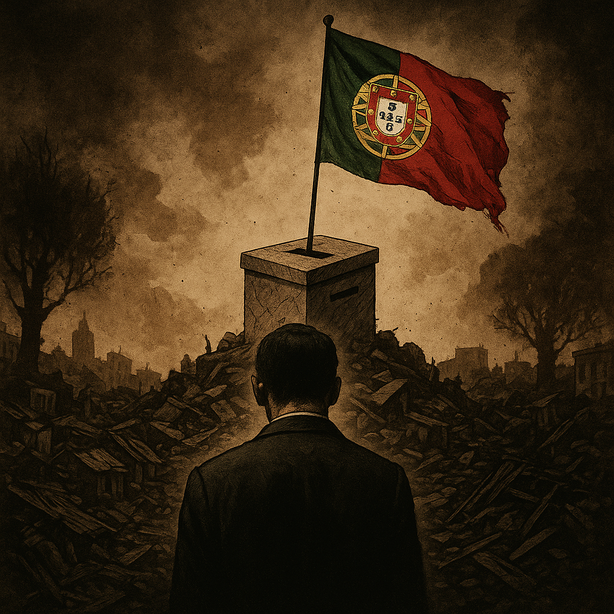

Publicado em 2025-04-30 18:43:38
Portugal entra novamente em campanha eleitoral. Mais uma.
Depois do tsunami Montenegro, que nada trouxe senão desilusão e promessas por cumprir, os portugueses são chamados de novo às urnas — como quem vai a uma procissão forçada, já sem fé, já sem esperança.
51 anos de democracia formal serviram apenas para alimentar a ilusão da alternância entre PS e PSD, dois partidos que se revezam no poder como se fossem equipas do mesmo teatro, encenando um falso confronto para manter o povo anestesiado.
Durante este meio século:
E o que fazem os partidos no Parlamento?
Discutem bagatelas, escândalos de ocasião, jogos florais.
O país real, esse, está a sufocar.
O povo olha em redor e pergunta-se:
Votar em quê? Votar em quem?
— No PS ou no PSD, que durante décadas se serviram do Estado em vez de o servir?
— No Chega, que surfa a raiva popular mas não passa de um embuste extremista e vazio, que clama por ordem e grita vingança — mas não tem ideias nem soluções?
— Nos pequenos partidos da esquerda radical, que confundem o povo com dogmas e propostas irrealistas, sempre de costas voltadas uns para os outros?
A verdade é uma só: o povo português está órfão.
Não tem alternativa real.
Está condenado a repetir eleições que não mudam nada.
Está sem voz, sem representação, sem saída à vista.
Portugal transformou-se numa nação de serviços e turismo, sem produção, sem projeto, sem rumo.
Um país pobre com aparência de moderno.
Um povo adestrado para aceitar tudo — menos mudar o essencial.
E porquê?
Porque a cultura de cidadania é quase inexistente.
Porque ensinaram ao povo que “não vale a pena”, que “são todos iguais”, que “melhor não mexer”.
E assim, de eleição em eleição, de governo em governo, o país apodrece em silêncio.
Agora... o ciclo repete-se.
As televisões anunciam debates que não interessam a ninguém.
Os partidos disputam percentagens como se estivessem a dividir migalhas de um pão já bolorento.
E o povo... esse vai às urnas porque o mandam, mas não porque acredite.
Portugal precisa de uma ruptura — e não de mais promessas recicladas.
Precisa de um despertar cívico profundo.
De um movimento livre, lúcido e intransigente, fora do sistema viciado que domina há décadas.
Mas enquanto isso não nasce, a pergunta permanece no ar, como um grito preso na garganta de milhões:
“Votar em quem?”
Francisco Gonçalves
(Fragmentos do Caos)
Créditos para IA, DeepSeek e ChatGPT, (c)
Imagens cortesia de OpenAI (c)